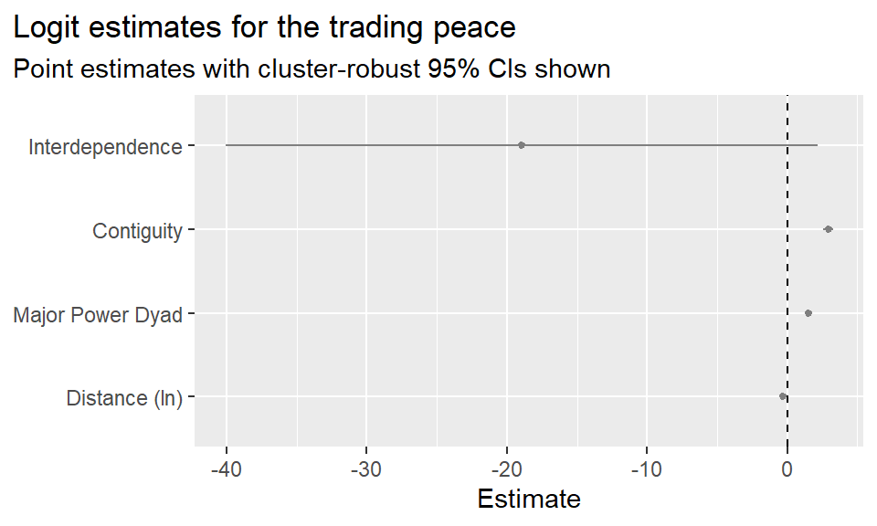
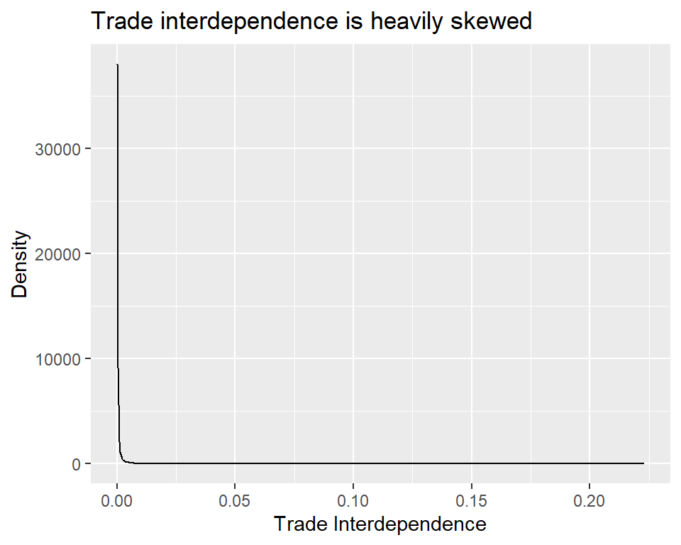
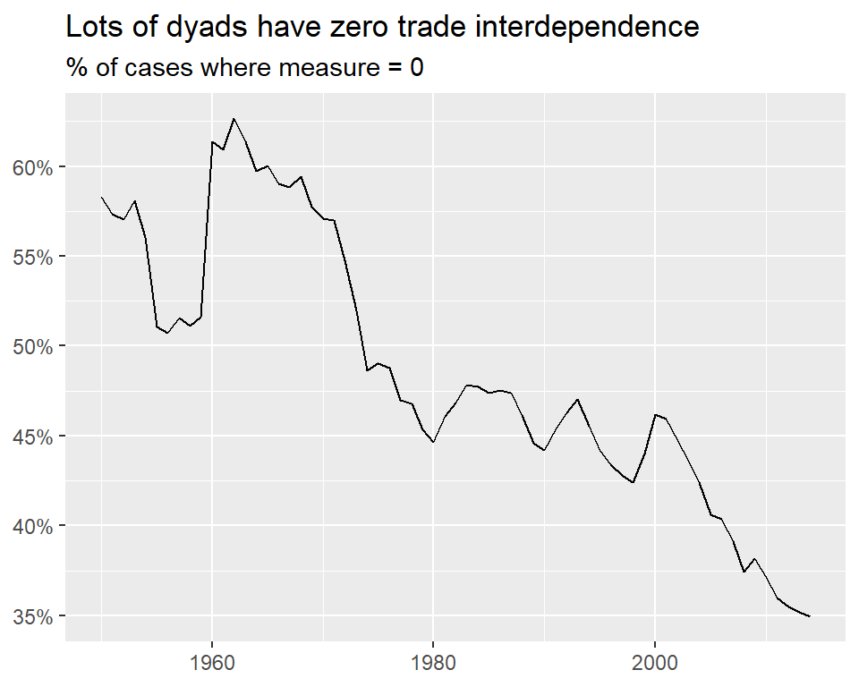
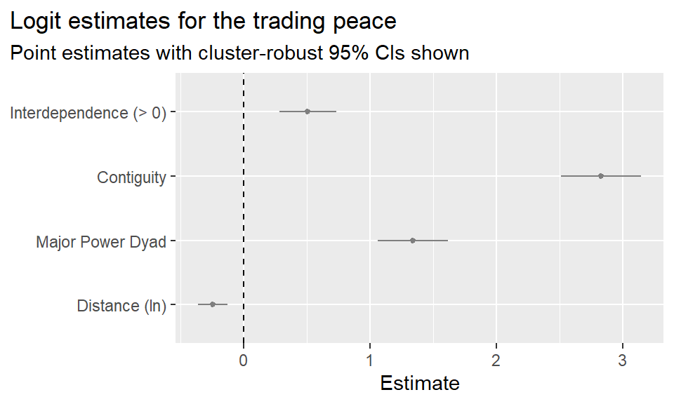
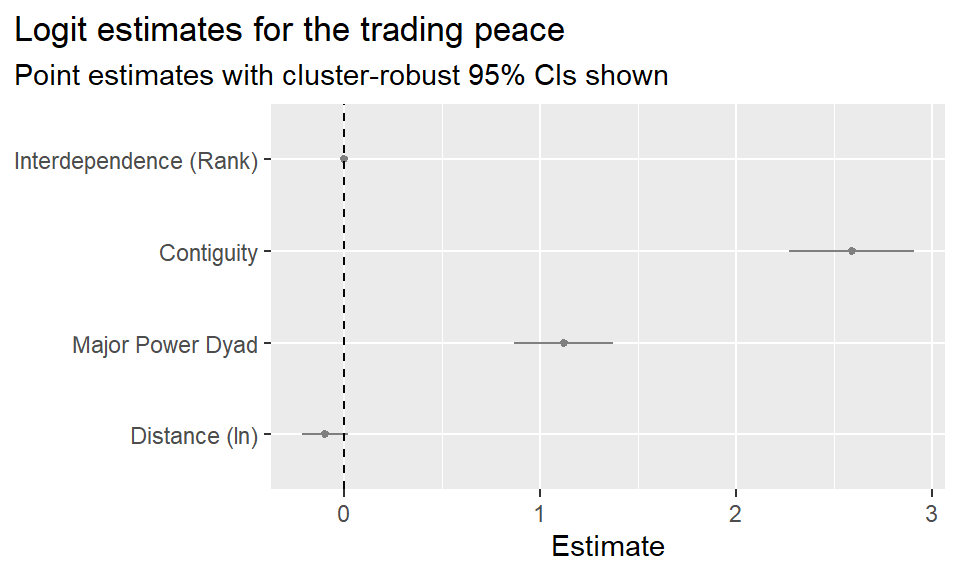
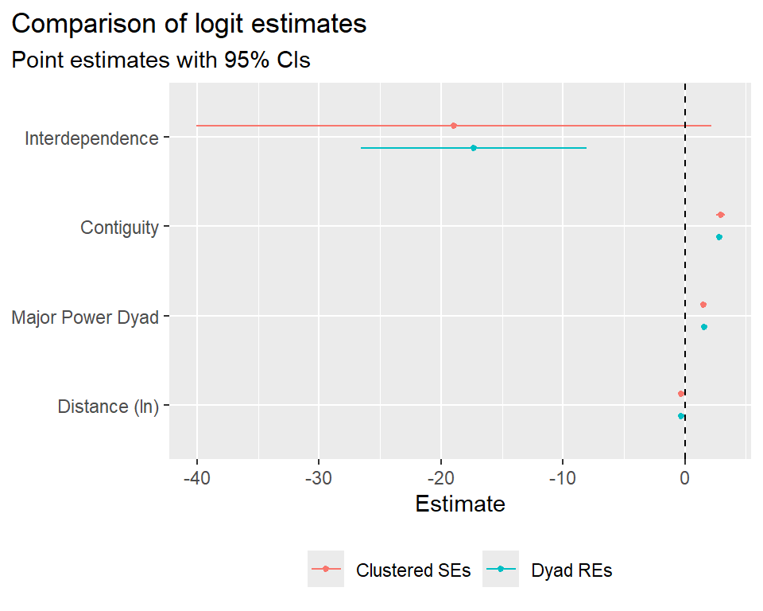

## packages and tools
library(tidyverse)
library(peacesciencer)
source(
"https://raw.githubusercontent.com/milesdwilliams15/death-destruction-data/refs/heads/main/helpers/peacesciencer_extras.R"
)
## make the data
create_dyadyears(
subset_years = 1950:2014,
directed = F
) |>
add_icd_mics() |>
add_cow_trade() |>
add_sim_gdp_pop() |>
add_contiguity() |>
add_cow_majors() |>
add_cap_dist() -> dt
## clean up the controls
dt |>
## controls
mutate(
cont = ifelse(conttype > 0, 1, 0),
major = pmax(cowmaj1, cowmaj2),
ldist = log(capdist),
dyad = 1000 * pmin(ccode1, ccode2) + pmax(ccode1, ccode2)
) -> dt8 The Trading Peace
Main ideas:
The trading peace describes the empirical reality that countries that have more trade interdependence are less likely to go to war
Trade interdependence theory offers an explanation for why this pattern exists: trade dependence increases the opportunity cost of conflict
Three key criticisms challenge the theory: trade rebounds quickly after wars end; war costs from trade loss correlate with confounding factors; and peace may cause trade rather than trade causing peace
Measurement: trade interdependence is calculated as the minimum trade dependence (bilateral trade / GDP) between a country pair
Empirical analysis produces mixed results, and significance only appeared after trying multiple model specifications, raising concerns about p-hacking
The trading peace finding remains empirically robust in the broader literature, even if the exact causal mechanism is debated
8.1 Introduction
The trading peace is a close cousin of the democratic peace, which I discussed in the last chapter. This is mainly because both perspectives are situated in liberal international relations (IR) theories rather than realist IR theories. The latter are concerned mainly (in some cases only) with the distribution of power as a cause of war. The identities, regimes, history, and interconnections between countries are treated as irrelevant.
Both the democratic and trading peace perspectives take the opposing view. They assert that domestic institutions (democratic peace) and trade/commerce (trading peace) differentiate certain countries from others and affect how they behave toward each other.
This, however, is as far as their similarities go. Unlike some explanations for the democratic peace which emphasize shared norms of negotiation and compromise, the most prominent explanations for the trading peace center on material interests. While many schools of thought exist, the one I want to address in this chapter, which I’ll call trade interdependence theory, posits that greater mutual dependence on trade between a pair of countries raises the costs of war.
This theory adheres quite closely to the bargaining model of war. If you remember back to several chapters ago, this is the perspective Braumoeller (2013) argues is most appropriate for defining “real war” as spelled out by Carl von von Clausewitz (2003). The idea is that countries have a disagreement over a certain issue, and “rolling the iron dice” is one political choice leaders may take to successfully resolve this disagreement.
However, as a classic piece of IR literature argues, a negotiated settlement costs less than war (Fearon 1995). Why do countries fight then? As Fearon (1995) argues, they fight because they miscalculate, because of biases, or because of commitment problems. As Wagner (2000) would later argue, starting a conflict might be the only way countries can get a clear sense of who has the upper hand in a negotiation. That is, countries fight to learn the cost of war.
What does this have to do with trade? Simply put, the bargaining model of war assumes war is costly, and trade, in trade interdependence theory, is argued to be an important factor in calculating war’s potential cost. While there are exceptions, many analyses show that trade declines (often substantially) between countries when they go to war with each other (Anderton and Carter 2001). As the logic goes, the more countries trade with each other, the greater the cost of fighting, and thus the greater the incentive to resolve disputes peacefully.
Like the democratic peace, evidence of the trading peace is a fairly robust empirical finding. However, much like the democratic peace as well, this isn’t enough to save it from fierce debate over exactly why this pattern exists. Mousseau (2021) highlights three challenges to this perspective that remain unresolved.
The first is that research shows trade quickly returns to pre-war levels once a conflict ends, which helps to mitigate the cost of fighting. In addition, research shows that trade never actually ceases during war. Add to these facts that accurate numbers of trade flows during war are hard to validate, and clear evidence that trade makes war too costly to pursue starts to evaporate.
The second is that for opportunity costs to truly explain the trading peace, it must be that elasticity and substitutability of traded goods is random with respect to the level of trade between countries and conflict. This probably isn’t true. Some point out that more industrialized and developed countries can offset many of the costs to war created by a loss in trade with a potential adversary. Other factors unique to specific countries may offset costs as well. As a result, the cost of war due to loss of trade is at best uneven, and at worst deeply correlated with possible confounding factors.
The third problem is that of reverse causality. How do we know that countries don’t fight because of trade, or that countries trade to avoid fighting? While this concern doesn’t outright contradict trade interdependence theory, it does highlight a conceptual problem with the idea that trade causes peace. It can just as easily be argued that peace causes trade.
These debates aside, the trading peace remains an important finding in peace research, and the opportunity costs of trade interdependence a well-known explanation for why the trading peace exists.
Next, I want to show you a typical way to measure trade interdependence, and then I’ll do an analysis to see if it supports the trading peace.
8.2 Quantifying Trade Interdependence
Oneal and Russet (1997) set the tone for future research on the trading peace with their measure of trade interdependence. Their analysis centered on non-directed dyads post World War II, and they defined trade dependence as the level of trade between two countries, divided by each country’s gross domestic product (GDP), respectively. Basically, holding trade constant, the country with the smaller GDP is considered more dependent on trade. Trade interdependence is then measured as the minimum trade dependence between a pair of countries. Holding trade constant, trade dependence for the country with the larger GDP captures the level of trade interdependence for the dyad.
This measure can be constructed using the {peacesciencer} R package, but it does require some additional steps along the way. First, here’s code to generate the raw data. It will produce a non-directed-dyad-year dataset from 1950 to 2014 that includes a measure of conflict onset using the MIE dataset (Gibler and Miller 2024), all the usual control variables, bilateral trade data, and economic data that includes a measure of GDP. Trade data can be added to a dataset using the add_cow_trade() function, and economic data using the add_sim_gdp_pop() function. The original data comes from the Correlates of War Project (Barbieri, Keshk, and Pollins 2009), and for each country pair in the data, the function to add trade information returns trade flows into country 1 (imports) from country 2, and vice versa, in millions of current USD. (Note that to get this to work for dyadic data, you may need to run download_extdata() in the R console first).
To construct the measure proposed by Oneal and Russet (1997), I next need to measure imports plus exports for each dyad to measure total trade. Then, to measure how much country 1 is dependent on trade with country 2, I need to divide by country 1’s GDP, and do the same for country 2 with its GDP. Finally, I’ll take the minimum trade dependence between countries as my measure of trade interdependence.
I have all the raw data to do this, but there’s just one problem. The measure of GDP I have in my data is in millions of 2017 constant USD, while import and export values are in millions of current USD. That is, researchers adjusted GDP data for inflation, but not trade. That’s no good. So how do I fix it?
Thankfully, lots of people use the R programming language to study financial data, and adjusting for inflation is a fairly common task for these folks. That means, of course, there’s an R package that solves this problem. It’s called {priceR}. You can install it by running install.packages("priceR") in the R console.
Once you have the package installed, you can run the below code which will do all the work necessary to help adjust for inflation. What it will do, specifically, is add a new column to the dyadic dataset called k which is a constant that I can multiply trade values by that will convert them into 2017 constant values.
## get constant to adjust for inflation
library(priceR)
inflation_dataframe <- retrieve_inflation_data("US")Validating iso2Code for US
Generating URL to request all 296 results
Retrieving inflation data for US
Generating URL to request all 66 resultscountries_dataframe <- show_countries()Generating URL to request all 296 resultstibble(
year = 1950:2014,
k = afi(
rep(1, len = length(year)),
year,
"US",
2017,
inflation_dataframe,
countries_dataframe
)
) -> inf_dt
## merge with the dyadic data
dt |>
left_join(inf_dt) -> dt
## calculate total dyadic trade and adjust for inflation
dt |>
mutate(
trade = flow1 + flow2,
trade2017 = k * trade
) -> dtNow that I have a measure of trade that matches the 2017 constant USD values for GDP, I can construct a measure of trade interdependence, as I do in the below code:
dt |>
mutate(
interdependence = pmin(trade2017/pwtrgdp1, trade2017/pwtrgdp2, na.rm = T)
) -> dtNow, let’s analyze the data to see if we find support for the trading peace.
8.3 Analysis
As I’ve done in all previous analyses, I’ll use the glm_robust() function to estimate a logit model and return robust standard errors clustered by dyad.
glm_robust(
miconset ~ interdependence + cont + major + ldist +
micspell + I(micspell^2) + I(micspell^3),
data = dt,
clusters = "dyad"
) -> fitNext, I’ll make a coefficient plot and look at the results. Take a look. Does the analysis support the trading peace?
coef_plot(
fit |> slice(2:5),
coef_map = c(
"Interdependence",
"Contiguity",
"Major Power Dyad",
"Distance (ln)"
)
) +
labs(
title = "Logit estimates for the trading peace",
subtitle = "Point estimates with cluster-robust 95% CIs shown"
)
Much to my surprise, it does not. The estimate for trade interdependence is negative, as expected. It also is quite substantial. But it isn’t statistically significant (the 95% confidence interval overlaps with zero). What’s going on here?
I decided to do a bit of digging into the data. The first thing I noticed is that trade interdependence is a heavily skewed variable, which you can see in the density plot I made below. This could cause some problems.
ggplot(dt) +
aes(interdependence) +
geom_density() +
labs(
title = "Trade interdependence is heavily skewed",
x = "Trade Interdependence",
y = "Density"
) 
I also noticed that lots of dyads have zero trade interdependence, which the next plot shows. From 1950 to 2014, anywhere between 35-65% of dyads had no trade interdependence whatsoever. So not only is trade interdependence heavily skewed, it has lots of zeros.
dt |>
group_by(year) |>
summarize(
mean = mean(interdependence == 0, na.rm = T)
) |>
ggplot() +
aes(year, mean) +
geom_line() +
labs(
title = "Lots of dyads have zero trade interdependence",
subtitle = "% of cases where measure = 0",
x = NULL,
y = NULL
) +
scale_y_continuous(
labels = scales::percent
)
I decided to play around with the data a bit to see if some changes made any difference to the results. The first thing I tried was making trade interdependence binary. Maybe the level of trade interdependence isn’t as important as the existence of interdependence. To test this idea, I estimated another logit model, but this time instead of using interdependence as a predictor, I wrote I(interdependence > 0). This will turn this measure into a binary variable based on whether a dyad has any trade interdependence.
glm_robust(
miconset ~ I(interdependence > 0) + cont + major + ldist +
micspell + I(micspell^2) + I(micspell^3),
data = dt,
clusters = "dyad"
) -> fit2You can see the new results in the coefficient plot below. With this one simple change, the estimate for trade interdependence is now statistically significant! It also now runs in the wrong direction. It’s positive; not negative. Countries that have any level of trade interdependence as opposed to none have a higher probability of fighting. That can’t be right, can it?
coef_plot(
fit2 |> slice(2:5),
coef_map = c(
"Interdependence (> 0)",
"Contiguity",
"Major Power Dyad",
"Distance (ln)"
)
) +
labs(
title = "Logit estimates for the trading peace",
subtitle = "Point estimates with cluster-robust 95% CIs shown"
)
Next I decided to adjust for the heavy skew in the data. I could try something like the natural log or (or better, the inverse hyperbolic sine, since trade dependence has zero values, and the log won’t work on zero). However, even these transformations don’t adequately normalize the data. So instead I decided to implement a rank-based transformation. This is a common transformation that researchers will use with heavily skewed data. What it does is assign a numerical score to observations based on their order. For example, if I had two data points, and one was 15 and the other 200, the first would get a rank of 1 and the second a rank of 2. They would receive these same scores even if the data points had different values. All that matters is the order; nothing else.
The below code implements this transformation and estimates another logit model.
myrank <- function(x) x |>
as.factor() |>
as.numeric()
dt |>
mutate(
intrank = myrank(interdependence)
) -> dt
glm_robust(
miconset ~ intrank + cont + major + ldist +
micspell + I(micspell^2) + I(micspell^3),
data = dt |> filter(interdependence > 0),
clusters = "dyad"
) -> fit3Here are the results. Alas, the results aren’t encouraging. It’s hard to see, because the new estimate for trade interdependence is so small. It’s still positive, but now it’s no longer statistically significant.
coef_plot(
fit3 |> slice(2:5),
coef_map = c(
"Interdependence (Rank)",
"Contiguity",
"Major Power Dyad",
"Distance (ln)"
)
) +
labs(
title = "Logit estimates for the trading peace",
subtitle = "Point estimates with cluster-robust 95% CIs shown"
)
In my desperation, I decided to try one more thing. I mentioned a few chapters ago that my preferred approach for modeling dyadic data with logit models is to model dependence within dyads directly using a multilevel model with dyadic random effects rather than an ad hoc adjustment to model standard errors. So I tried that below, using the original model specification for trade interdependence.
library(mgcv)
library(lmtest)
gam(
miconset ~ interdependence + cont + major + ldist +
micspell + I(micspell^2) + I(micspell^3) +
s(dyad, bs = "re"),
data = dt,
family = binomial
) -> fit4Here are the results, which I decided to compare side-by-side with the original model. At last, some success! The estimate for trade dependence is somewhat attenuated compared to the original model with cluster-robust standard errors, but it is still negative and now statistically significant. Maybe the trading peace has some legs to stand on after all.
fit4 |>
coeftest() |>
broom::tidy() |>
mutate(
lower = estimate - 1.96 * std.error,
upper = estimate + 1.96 * std.error,
model = "Dyad REs"
) -> fit4_tidy
bind_rows(
fit |>
mutate(model = "Clustered SEs") |>
slice(2:5),
fit4_tidy |>
slice(2:5)
) |>
coef_plot(
coef_map = c(
"Interdependence",
"Contiguity",
"Major Power Dyad",
"Distance (ln)"
)
) +
labs(
title = "Comparison of logit estimates",
subtitle = "Point estimates with 95% CIs",
color = NULL
) +
theme(
legend.position = "bottom"
)Warning: `position_dodge()` requires non-overlapping x intervals.
Or maybe it doesn’t. While all the above might look like careful detective work, you could also call it “p-hacking,” which is the process of finagling a dataset until it gives you the significant results you were looking for. You could also call it an “inquisitional data analysis.” That is, you torture the data until it confesses. Either way, this isn’t the most principled way to go about doing research.
I should admit that I live in a glass house. Whether consciously or unconsciously, I’ve felt pressure to find the “right” results in data. This is quite human. You believe so strongly in an idea that you refuse to give up when things don’t first go your way. There’s something commendable about that, but also dangerous.
There’s no perfect way to solve the human tendency to seek out a desired result, but certain practices can help. One is pre-registration. That is, think really hard about your data before you see it, specify ahead of time how you plan to analyze it, and stick to your plan.
Another is transparency about your process. If you tried multiple specifications but only showed the significant results, that’s not transparent. But if you tried several and showed them all, that’s better. In academic research, many reviewers and editors expect you to try multiple approaches as “robustness checks” anyway, so the fact that you already tried a few different modeling and measurement approaches puts you ahead.
8.4 Summary
The trading peace, much like the democratic peace, describes a pattern in international conflict that many agree exists but disagree on why. One of the more popular arguments in favor of the idea that trade causes peace is trade interdependence theory, which holds that trade increases the opportunity cost of war. As a result, countries that trade a lot with each other have incentives to resolve their disputes peacefully rather than resort to military force.
This argument isn’t immune to criticism. Three problems that remain unresolved are: (1) the fact that declines in trade during war often quickly rebound once the fighting is over, while trade during war never truly disappears; (2) the fact that the cost of war due to trade is correlated with other factors that might also influence the cost of war; and (3) the fact that peace can just as easily be argued to be the cause of trade as trade can be argued to be the cause of peace. If you find trade interdependence theory compelling, research that confirms the opportunity cost of war among trading countries, accounts for hard to address confounders, or addresses reverse causality would be a good place to start.
My own analysis confirms the empirical reality of the trading peace, but only after a good deal of p-hacking. Of course, because my analysis is only intended to be an example, I advise against taking the results too seriously. Another weakness with my analysis is that I failed to control for certain factors that also have become commonplace in peace science research. Many of these are factors that I already discussed in previous chapters, like the balance of power and democracy. Many studies that examine the trading peace in particular also control for economic growth, as Oneal and Russet (1997) do in their canonical study. Plenty of studies also account for alliances, which is the subject of the next chapter.